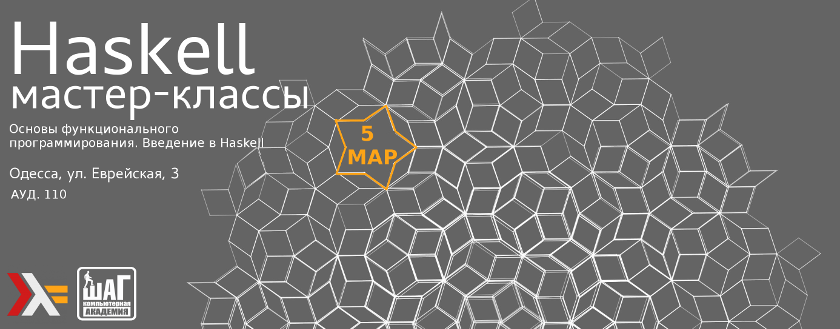

В четверг, 5 марта, состоится мой мастер класс “Основы функционального программирования. Введение в Haskell”. Вход свободный
Встречаемся в КА ШАГ (Еврейская, 3) в 18.30.
Данный мастер-класс проводиться с целью увеличения интереса к функциональному программированию(ФП) и Haskell в частности, не требует особых знаний программирования. Я постарюсь максимально доступно рассказать об истоках, области применения ФП, основах Haskell и постараюсь устроить небольшой live-coding в завершении.
Репосты, распространение и продвижение приветствуется!
— Сергей Бушняк
В четверг, 26 февраля, состоится вторая встреча OdHUG в 2015 году.
Встречаемся в КА ШАГ (Еврейская, 3) в 19.00.
Регистрация на встречу
Мы снова возвращаемся к формату встреч с докладами, благодаря поддержке Компьютерной Академии ШАГ, которая любезно выделила нам помещение и необходимое оборудование
Встреча будет посвящена “Тестированию в Haskell”. Я подготовлю доклад по библиотеке SmartСheck для чего она нужна и где будет полезна. В то же время у нас остается 1 свободный слот, если у вас есть интересный материал или чем поделиться зарегистрируйтесь в списке докладчиков.
Я постараюсь поддерживать формат с докладами максимального долго, поэтому если у вас есть интересная информация, которой вы хотите поделиться, зарегистрируйтесь в списке докладчиков, указав приблизительную встречу и я с вами свяжусь для обсуждения.
Репосты, распространение и продвижение приветствуется!
— Сергей Бушняк
В предыдущем посте я писал, что благодаря помощи ИТ Академии Шаг мы возобновляем формат встреч с докладами.
Для увеличения интереса к Haskell и функциональному программированию, меня попросили сделать серию мастер-классов для тех кто никогда не сталкивался с функциональным программирование и Haskell. Пока запланировано 5, в которые я постараюсь ужать максимум информации. Потом возможно будут еще, зависит от интереса слушателей.
Первый мастер-класс “Знакомство с Haskell и функциональным программированием” состоится в четверг 19 Февраля 2015.
Желательно иметь опыт работы с любым языком программирования, но я постараюсь объяснять сложные вещи максимально доступно. Поэтому приходите сами и приглашайте своих друзей.
— Сергей Бушняк
В четверг, 22 января, состоится первая встреча OdHUG в 2015 году!
Встречаемся в ИТ Академии ШАГ(ул. Еврейская, 3) в 19.00.
Да у меня хорошие новости! Мы возвращаемся к формату встреч с докладами, благодаря поддержке ИТ Академии Шаг, которая любезно предоставила нам помещение и необходимое оборудование. Если у вас есть интересные темы, которыми вы хотели бы поделиться заполните форму докладчика.
Следующая встреча состоится в четверг 26 февраля и будет посвящена “Тестированию в Haskell”. Я расскажу о том что такое SmartCheck и чем он полезен.
А вот второй слот для доклада пока открыт, если у вас есть интересная информация или опыт различных подходов для тестирования в экосистеме Haskell, заполните ту же форму докладчика и поставьте галочку на отметке “ближайшая встреча”, я свяжусь с Вами.
— Сергей Бушняк
В четверг, 22 января, состоится первая встреча OdHUG в 2015 году!
Встречаемся в Алхимии (Дерибасовская, 8) в 19.00.
Обсудим несколько тем:
Развитие экосистемы языка Haskell, индустриальные инструменты разработки, такие вещи как Stackage, кастомные снапшоты и зачем это все нужно.
Нововведения в Сabal 1.22, relocatable packages и прочие.
Просто пообщаемся на интересные темы связанные с Haskell и его экосистемой.
Регистрация
— Сергей Бушняк
Друзья,
В связи с ситуацией в стране я считаю правильным отложить встречу, которая должна была состояться сегодня, пока положение не стабилизируется.
Тестирование на Haskell — важная и интересная тема, и мы обязательно к ней вернемся. Но сегодня происходят события, которые многие, включая меня, считают не менее важными.
Надеюсь на ваше понимание.
(Все зарегистрировавшиеся участники были оповещены по email. Если вы не получили письмо или не успели его прочесть, приношу отдельные извинения.)
— Роман Чепляка
Одесская группа пользователей Haskell и DataArt приглашают всех желающих узнать больше про функциональный язык программирования Haskell.
О чем поговорим
- Насколько верно мнение «если код на Haskell компилируется, то он работает»;
- Какой код стоит тестировать, а какой — нет;
- Виды тестов: unit tests, property tests, golden tests. В каких случаях применять тот или иной вид тестов;
- Использование testing framework;
- Как интегрировать тесты в cabal-проект;
- Как автоматически проверить, насколько код покрыт тестами.
Те, кто придут с ноутбуками с установленной Haskell Platform, после доклада смогут попрактиковаться в написании тестов на Haskell.
Ведущий — Роман Чепляка.
Время и место
Четверг, 23 января 2014 г. в конференц-зале DataArt: Одесса, парк им. Шевченко, стадион «Черноморец», корпус D1, 5-й этаж.
Начинаем в 19.00.
Регистрация
Для участия во встрече необходимо зарегистрироваться.
— Роман Чепляка
Одесская группа пользователей Haskell при поддержке DataArt приглашает всех желающих узнать больше про функциональный язык Haskell и познакомиться с монадами.
Чем займемся
Хватит философии — время колбасить код!
Мы напишем простую утилиту командной строки на Haskell. По ходу дела узнаем, как в Haskell делать ввод-вывод, вызывать системные функции и разбирать аргументы командной строки. При этом прозвучат слова «монада» и «аппликативный функтор».
Знакомство с синтаксисом языка будет полезным. Ссылки на некоторые образовательные ресурсы есть в слайдах с первой встречи.
Для максимального эффекта приходите со своим ноутбуком с установленной Haskell Platform и пакетом optparse-applicative. Информация о том, как ставить платформу и пакеты — все в тех же слайдах.
Ведущий — Роман Чепляка.
Время и место
Четверг, 19 декабря 2013 г. в конференц-зале DataArt: Одесса, парк им. Шевченко, стадион «Черноморец», корпус D1, 5-й этаж.
Начинаем в 19.00, закончим около 21.00.
Регистрация
Для участия во встрече необходимо зарегистрироваться.
— Роман Чепляка
Опубликованы слайды со встречи «Haskell и ООП».
— Роман Чепляка
Одесская группа пользователей Haskell при поддержке компании DataArt приглашает всех желающих узнать больше про функциональный язык Haskell, объектно-ориентированное и алгебраическое программирование.
О чем поговорим
На последней встрече живой интерес вызвала тема ООП против ФП, поэтому было решено подробнее остановиться на этом вопросе и развеять популярные заблуждения.
Прежде всего, нам придется разобраться, что же такое ООП. Это сам по себе интересный вопрос, и не такой простой, как может показаться!
Попутно мы познакомимся с алгебраическим программированием — стилем структурирования программ, дуальным к ООП. Обсудим взаимные преимущества и недостатки этих подходов, и научимся применять их в коде на Haskell.
Да-да, мы будем писать объектно-ориентированный код на Haskell! Впрочем, фабрик и синглтонов не будет, так что можно приходить с детьми.
Знание Haskell не обязательно, но знакомство с базовыми концепциями — лямбда-функциями и алгебраическими типами данных — будет полезно. Ссылки на некоторые образовательные ресурсы есть в слайдах с прошлой встречи.
Докладчик — Роман Чепляка.
Время и место
Встреча состоится в четверг, 14 ноября 2013 года в конференц-зале компании DataArt: Одесса, парк им. Шевченко, стадион “Черноморец”, корпус D1, 5 этаж.
- 18:30 — сбор участников
- 19:00 — доклад
- 20:00 — неформальное общение
Регистрация
Для участия во встрече необходимо зарегистрироваться.
— Роман Чепляка
Спасибо всем, кто пришел познакомиться с экосистемой Haskell.
DataArt опубликовали отчет о встрече.
А вот слайды, с ссылками на полезные ресурсы.
Следующая встреча состоится в середине ноября, следите за анонсами!
— Роман Чепляка
Одесская группа пользователей Haskell при поддержке компании DataArt приглашает всех желающих узнать больше про функциональный язык Haskell и его экосистему.
О чем поговорим
У новичков в Haskell, помимо самого языка, часто возникают сложности с экосистемой. Как установить Haskell, как найти и установить нужные пакеты, где искать документацию, и т.д. Мы попытаемся ответить на эти вопросы.
Также обсудим, какие бывают проблемы при сборке Haskell-пакетов, и как с ними бороться. И научимся пользоваться песочницами (sandboxes), которые появились в последней версии Cabal.
Докладчик — Роман Чепляка.
Время и место
Встреча состоится 15 октября 2013 года в конференц-зале компании DataArt: Одесса, парк им. Шевченко, стадион “Черноморец”, корпус D1, 5 этаж.
- 18:30 — сбор участников
- 19:00 — доклад
- 20:00 — неформальное общение
Регистрация
Для участия во встрече необходимо зарегистрироваться.
— Роман Чепляка
В четверг, 19 сентября, состоится очередная встреча OdHUG!
Встречаемся в Алхимии (Дерибасовская, 8) в 19.00.
Сентябрь — активный месяц в мире Haskell. В начале месяца прошел хакатон, а в конце месяца состоится самая главная конференция. Будет что обсудить :)
Ну и, как обычно, можно будет задавать вопросы и получать ответы.
Регистрация
— Роман Чепляка
Во вторник, 13 августа, состоится очередная встреча OdHUG!
Встречаемся в Алхимии (Дерибасовская, 8) в 19.00.
Обсудим ICFP Programming Contest 2013, который пройдет с пятницы по воскресенье. Я буду участвовать, так что смогу поделиться впечатлениями из первых рук. Если еще кто-то из участников придет — будет вдвойне интересней!
О прошлых ICFPC можно почитать в блоге Дмитрия Астапова.
Регистрация
— Роман Чепляка
В ближайшую среду, 17 июля, состоится очередная встреча OdHUG!
Встречаемся в Циферблате (Вице-Адмирала Жукова, 3/7) в 19.00. Вероятно, будем сидеть внизу.
На этот раз надеемся все-таки поговорить об FRP и познакомиться с Брайаном :)
Регистрация
— Роман Чепляка
В ближайшую пятницу, 21 июня, состоится очередная встреча OdHUG!
Встречаемся в Алхимии (Дерибасовская, 8) в 19.00.
Поговорим, среди прочего, о функциональном реактивном программировании (FRP).
В гостях у OdHUG — Брайан Рихтер из Калифорнии! Поэтому общаться будем на английском.
Регистрация
— Роман Чепляка
В ближайший четверг, 4 апреля, состоится последняя пред-хакатоновская встреча OdHUG!
Встречаемся в Циферблате (Вице-Адмирала Жукова, 3/7) в 19.00.
Поговорим, среди прочего, о generic programming и графических интерфейсах.
Регистрация
— Роман Чепляка
Следующая встреча OdHUG пройдет в субботу, 9 марта, в Алхимии (Дерибасовская, 8), в 19.00.
На повестке дня, помимо прочего:
Регистрация
— Роман Чепляка
С 3 по 5 мая на базе компании Provectus IT в Одессе пройдет международный Haskell-хакатон.
Хакатон — это отличная возможность познакомиться с другими хаскеллистами, найти новых участников для вашего проекта, улучшить существующие или создать новые библиотеки и инструменты.
Чтобы принять участие, пожалуйста, зарегистрируйтесь.
— Роман Чепляка
В ближайшую среду, 6 февраля, состоится очередная встреча OdHug!
По традиции, соберемся в Циферблате и перетрем последние хаскельные сплетни :)
Время: 19.00.
Обратите внимание, что мы, возможно, будем в подвальном этаже. А может и нет.
Регистрация мне на почту, пожалуйста.
— Роман Чепляка
Первая встреча в этом году состоится в следующий четверг, 19 января, в Циферблате, в 19.00.
В программе:
презентация сайта OdHUG
пользуясь случаем, можно обсудить Hakyll — генератор сайтов на Haskell, с помощью которого и построен наш сайт
узнаем, что такое торсоры и зачем они нужны
порассуждаем о проблемах pretty-printing’а
поделимся друг с другом последними достижениями и дальнейшими творческими планами :)
— Роман Чепляка
Последняя встреча в этом году состоится в это воскресенье, 16.12, в 14.00.
Эксперимента ради, проведем ее в Циферблате (пер. Вице-Адмирала Жукова 3/7, между Греческой и Дерибасовской). http://vk.com/clockfaceodessa
Как обычно, будем общаться на разные околохаскельные темы. Плюс, я сделаю один интересный анонс :)
— Роман Чепляка
Послезавтра, 8.11, состоится очередная встреча OdHUG.
Условия те же — 19.00, Алхимия.
Регистрация мне на почту.
В прошлый раз кто-то спрашивал про записи (records) в Haskell — постараюсь рассказать подробнее.
Подумайте, что бы вам было интересно рассказать или обсудить.
Кстати, если кто пишет на Haskell в vim — я давеча написал маленький, но полезный плагин https://github.com/feuerbach/vim-hs-module-name
— Роман Чепляка
Очередная встреча OdHUG состоится в этот четверг, 4 октября. Приношу извинения за столь позднее объявление.
Координаты те же: Алхимия (Дерибасовская, 8), 19.00.
Просьба отписаться мне на почту, если вы собираетесь прийти.
В программе:
- делимся впечатлениями от лекций
- я поделюсь впечатлениями с ICFP и расскажу, как в Haskell протаскивают зависимые типы
- если повезет, Сережа расскажет нам о прогрессе своего проекта software-defined radio
— Роман Чепляка
Как я уже объявлял на последней встрече, я буду читать курс по Haskell в Одесском университете. Занятия будут проходить по субботам, ориентировочно с 10.30 до 12.30, в здании мехмата на Дворянской.
Если есть желание посещать, напишите мне.
— Роман Чепляка